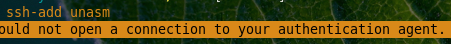
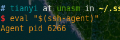
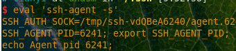
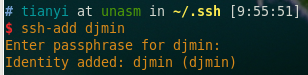

Git更换系统之后，ssh无法重用的问题
之前每次换系统，都需要进行更新ssh，虽然不是很麻烦，但是何必呢
昨天将.ssh目录整个拷贝，本来以为这样可以用，但是还是不行，会报错说Permission denied(publishkey)， fat:The*****据从晚上搜来的攻略来说，需要ssh-add 但是这边报错,或没有一个经过验证的ssh 链接，这个时候，需要运行eval “$(ssh-agent)” 得到

其实之前还有一步，不清楚到底有没有用处，一起拿出来吧
然后我们再次ssh-add
这样，之前的ssh 就可以重复利用了
上面的也许是在胡扯呢。。从今天的感觉来说，虽然当时解决了问题，不过后遗症不少，今天的结论是id_rsa文件必须要有，然后其他的通过ssh-add的方式添加 .ssh下面的非.pub文件，这样就可以了